生成式推荐后训练的长列表召回代价
- 论文：Better Rankers, Worse Retrievers: The Hidden Cost of RL Post-Training in Generative Recommendation
- 作者：Yuheng Chen、Fan Zhang、Yixuan Xu、Chao Yang、Yang Xiang、Can Yang
- 机构：香港科技大学；合作机构为 Trip.com Group
- 来源：arXiv:2611.22838v1，2026 年 11 月 17 日提交，预印本
- 代码：未核验到论文专属公开仓库。论文提到 MiniOneRec 的实现与 TRL，二者用于说明实验谱系。
作者从同一个监督微调检查点出发，把生成式推荐的评估从前几条扩到前五百条，并追踪日志目标到底去了哪里。通过逐提示全目录打分、受控训练和目标名次分组，他们定位了长列表损失的来源，再用一个额外的训练项约束 rollout 外的相对评分。
生成式推荐通常在监督微调后做强化学习，收益却主要用前十条结果衡量。部署中，模型经常要把数百个候选交给下游排序器或奖励模型。强化学习能让榜首更准，也可能让原本能够交给下游的日志目标掉出候选池。
1. 背景和问题
1.1 从展示榜单到候选交付
生成式推荐把物品映射为短的离散语义编号，模型从用户近期消费序列中预测下一件物品的编号。这个接口可以接在级联推荐的第一段，也能给用户直接展示结果。前者由生成模型交付一批候选，再交给具备其他信号的下游模型排前几名。后者主要消费模型输出的前几条。在级联里，日志目标排在第八十或第三百仍可供后续模型选用。若候选接口只保留前五百条，第五百与第五百零一的区别是能否过这一关，两者在生成模型分值上却可能相距很小。论文讨论的“更好的排序器”指生成器自身小截断处的离线准确性；标题中的“更差的召回器”则指同一生成器在较大阈值下覆盖单个日志目标的能力。
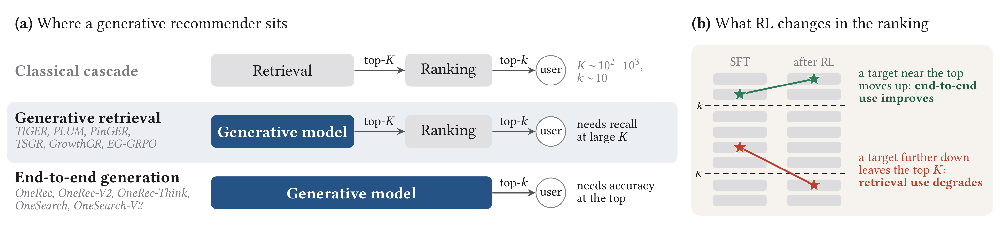
Figure 2 左半沿箭头给出三条路径。传统级联和生成式检索都先交付较大的候选集合，再由排序模块缩到展示规模，差别在第一层用什么模型。端到端一行把生成模型直接接向用户，小写的深度对应最后展示的少量结果，大写的深度对应可能以百或千计的候选交付。右半的两条虚线用的是位置门槛。绿色目标原来已经靠前，移动后跨进更短的窗口，可以贡献一次榜首附近的命中。红色目标原来仍在长窗口内，移动后越过更宽的边界，于是下游再强也无法在这个通道里选它。两条箭头表示两类目标在各自提示下的移动，不要求同一个目标在同一次请求里沿两个方向变化。收益和损失可以在同一批测试提示上并存，分别落到不同用户历史、不同初始名次和不同截断点。若多个通道共同供给候选，被这一路丢掉的物品仍可能由其他通道补入。图中给出的是生成通道自身的交付边界，整个推荐链最终会丢多少还取决于合并、去重和截断。
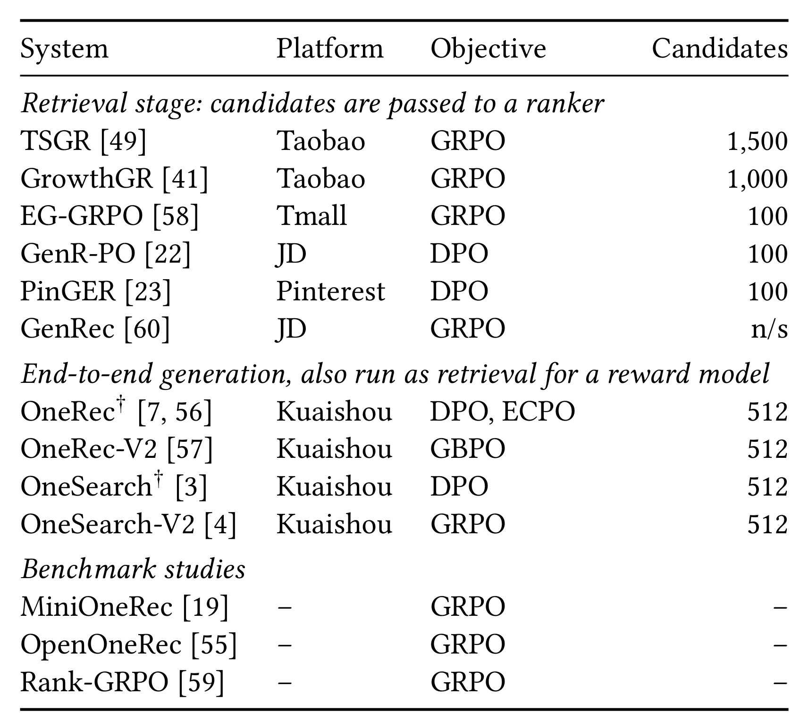
Table 1 按作者归类列出已有系统、平台、后训练目标和候选规模。作为检索阶段的淘宝 TSGR 与 GrowthGR 分别列出一千五百和一千条，天猫 EG-GRPO、京东 GenR-PO 和 Pinterest PinGER 是百条，GenRec 的数量未列明。另一组的 OneRec、OneRec-V2、OneSearch 与 OneSearch-V2 均标为五百一十二，说明以端到端生成定位的系统也可能把较宽的结果提供给奖励模型。最后的基准研究组没有可直接比较的线上交付数量。阅读最右列还要区分作者给出的两种口径。有下一阶段时优先填每请求交付候选数，缺该信息时采用最大束宽。这个表能说明深度差距确实出现在公开系统设置中。不同系统列使用不同的任务、目标函数、候选定义和下游选择器，表格并未提供同一对照下的召回变化，也不能用来给 GRPO 和 DPO 排优劣。如果验收只把生成的五百余条截到前十计算指标，候选接口本身的退化便可能在评估时被截掉。若真正交付时还要过滤历史消费或按规则去重，工程上也要分别记录过滤前后的实际深度。
作者引用 OneRec 技术报告帮助解释这种接口差别。该报告中模型自己的前列结果相对生产级联人均使用时长为加百分之零点零一，让奖励模型从生成候选中再选时为加百分之零点五四。这里是前人报告中两种使用方式的结果，无法据此判断本文的锚定上线后会增加多少时长。类似地，论文引用 OneSearch-V2 的束宽五百一十二和前十对比，是为了指出评估窗口与解码窗口可能分离。本文自己的五组实验研究的是下一物品日志，线上系统的商品曝光、点击选择和候选混排都没有进入测量。
1.2 长列表里的目标如何消失
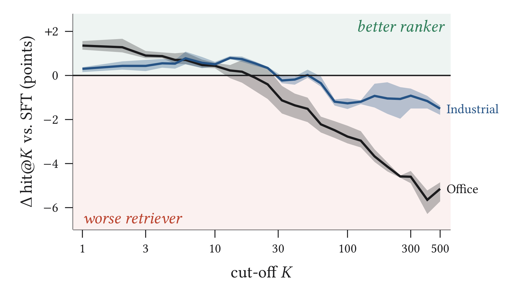
Figure 1 横轴从前一条走到前五百条，间距按对数尺度显示，纵轴是后训练相对起始 SFT 的 Hit 差，单位为百分点。零线以上表示该深度下新增命中的测试提示多于丢掉命中的提示，零线以下则反过来。黑线 Office 在约二十条处由正转负，蓝线 Industrial 在约五十条处转负，后续 Office 曲线跌得明显更深。阴影给出三个随机种子的范围，读图时不能把它当作逐提示的置信区间。两条曲线来自对同一个目录逐物品精确打分。横轴最深处只是取目录中的前五百位，命中目标的总量仍受整个目录的大小和排序分布影响。同一模型扩深候选时命中率仍会增加或持平，下降的是它相对 SFT 的差值。若榜首部分多命中一批目标，另有一批原本位于中部的目标掉出候选池，正负变化会随着门槛改变而切换。线上的候选人数又可能受前缀束搜索限额影响，因此作者随后把固定束宽的近似解码作为单独核验，避免把真实的评分顺序变化归因于搜索剪枝。
单目标评估能回答记录中的下一件物品是否入池，但推荐日志往往存在多个看起来合适的未选择物品。用户近期买过打印机，下一条可能是墨盒，也可能是纸或其他配件。一次历史只观测到一次实际选择，模型的其他高分候选没有同期的可观测反事实。监督微调每条提示都提升真实目标的对数概率，参数共享和概率归一化仍会带来间接影响。组相对训练还会在命中组中对未记录候选施加显式有符号的更新，于是“没有选到”的事实改变了同组竞争关系。恰好是模型能搜到的近邻更频繁地被放进组里，难负例选择因此同时决定了哪一批可能有用的物品承受压力。
文章沿三条可检验的问题推进。第一是从哪个深度起，后训练相对于原始检查点出现净丢失，以及净变化之下有多少已命中的提示退出。第二是造成退出的信号来自奖励定义、有限组采样还是共享参数传播。第三是能否用局部约束把损失主要限制在产生负信号的历史上，同时保留头部调整。区分这些问题对诊断有实际意义。单纯把概率变尖会降低熵，却不会改变严格单调变换下的名次。大档位的命中下降需要出现分数反转并越过阈值。单看不同模型全目录端点也看不到谁被换走，必须把同一提示在两个检查点下的目标名次对应起来，再分辨原已命中目标的流失和新增命中的抵消。
2. 方法
2.1 语义编号打分与目录内解码
系统的输入是列出近期物品语义编号的提示。作者先把物品的文本嵌入做残差量化，每件物品对应三个码，每级码本大小为二百五十六。码加入语言模型词表。前缀树来自合法目录，训练与服务中的约束解码沿合法前缀扩展，输出可以映射回物品。模型用三个条件对数概率相加给序列打分，因而共享前缀的物品部分分值来自同样的预测路径，而后续代码仍可区分同组商品。
符号解释：$x$ 是用户提示，$i$ 为目录物品，$c_\ell(i)$ 为其第 $\ell$ 级语义码，$c_{<\ell}(i)$ 为之前的前缀，$\pi_\theta$ 为参数 $\theta$ 对应的生成策略，$s_\theta$ 是完整代码串的对数分数。有限束宽会在尚未看见完整编号时裁掉部分前缀。实验另用遍历目录前缀树的精确评分来检查名次，可在同一评分上读取多个截断点。
符号解释：$\mathcal I$ 为目录，$y$ 是提示对应唯一已记录的下一物品，$K$ 为截断位置，$\mathbf1$ 为指示函数，期望在测试提示的经验分布上求平均。严格大于的计数给出目标名次。此处每条提示只有一个目标，命中率就是该离线口径的召回率。小截断的 NDCG 进一步对位置折扣，目标从第三升到第一可以改变它，即便两者都命中前十。
2.2 监督微调与组相对后训练
符号解释：期望针对训练日志中历史与下一物品对，$\pi_\theta(y\mid x)$ 是给目标语义编号的生成概率。式子描述 SFT 的下一物品主目标，论文还加入标题与语义编号对齐的辅助任务。验证损失用于选择检查点，所得模型记为 $\pi_0$。后训练用它初始化，默认配置还保留同一检查点作冻结参考。两段训练共享相同的生成输出接口。
符号解释：$\mathcal R(x)$ 是带采样的受限束搜索产出的 $G=16$ 个互异物品，$i_j$ 是第 $j$ 个候选，$\rho(j)$ 是它的束内位置，$r_j$ 是奖励，$w_\rho$ 是归一化位置权重。$\bar r$ 和 $\sigma_r$ 是组内奖励均值和标准差，$\epsilon$ 使零方差组仍可计算，$A_j$ 是组相对优势。命中时，位居前列的竞争项会承受更大的负奖励。所有位置权重之和为一，但正例所在位置未被计为负例，所以组均值不必恰为零。目标全组未出现时奖励全为零，标准化后策略优势也全为零。
符号解释：第一项是优势加权的策略损失，$\pi_{\rm ref}$ 是参考策略，$\widehat{\mathrm{KL}}_{\mathcal R(x)}$ 为在 rollout 的代码位置估算的反向 KL，$\beta$ 默认是千分之一。实际代码用裁剪的策略代理损失。每组只用于一次梯度更新，计算该步梯度的概率比为一，论文因此用上式写策略梯度。全零优势可以与仍存在的参考正则同时发生。参考正则的采样位置集中在组内，无法直接约束所有组外物品的相对顺序。
2.3 有限组更新与跨历史传播
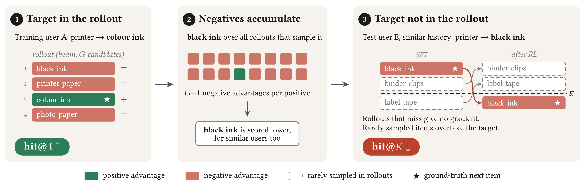
Figure 3 左栏是训练用户 A 的打印机历史，记录的下一件商品是彩色墨盒，在示意组里排第三。绿色目标得到正优势，黑色墨盒、纸等红色候选因为同组未命中收到负优势。中栏把黑色墨盒放回多条历史中累计。同一个墨盒可以一直是合理备选，也可能隔很多组才成为一次实际记录的目标。多个训练请求共享代码和参数，墨盒在别的打印机历史下也可能随之降分。右栏切到另一条历史 E，真正记录的是黑色墨盒，但它在该类历史上通常达不到训练采样窗口；当模型给这类提示更新时，未命中组没有本地策略梯度来补回它。虚线框里的长尾候选即使自身分值没有实质提高，也可能因墨盒降分而把它挤过交付界线。图画的是机制示例，四个物品只是为了便于看清，实际训练组含十六个物品。图例的星标是已有日志标签，颜色只表达当前组中优势的方向，不能据此推断未记录物品真实不相关。
符号解释：$p(i\mid x)$ 是理想化的真实下一物品分布，$HR_K$ 是给定历史下精确榜单的期望命中，$J$ 是期望二元命中奖励加完整目录 KL 的目标，$\pi^\star$ 是它在每个历史可独立优化时的解。$\beta>0$ 控制新策略偏离参考的程度。命题 4.1 由交换论证得到，任何新入 Top-$K$ 的物品若跨过了原来在其中的物品，必有更高的真实下一物品概率，因此 $HR_K(\pi^\star;x)\ge HR_K(\pi_0;x)$。这个比较使用真实期望奖励和完整目录正则，不能直接套在式二的位置惩罚、有限束样本和共享网络训练上。
符号解释：$\mathcal R$ 简写当前提示的 rollout，$g$ 是忽略参考 KL 后策略项的上升方向，$A_y$ 对应目标优势，$A_i$ 是竞争物品优势。门控指示函数使未命中组的方向为零。有独立物品 logits 的表格策略时，组优势之和为零，可抵消对未采样 logits 的 softmax 归一项。共享模型的参数更新会使未参加当前组的历史也产生分数漂移。作者在训练前用 SFT 对每条训练提示取最高分的十六件商品，按奖励规则计算优势后按物品加总。这项记录刻画的是原策略下潜在负优势的积累程度，未使用训练后样本，也不声称还原实际每一步梯度。
2.4 Rollout 外锚定
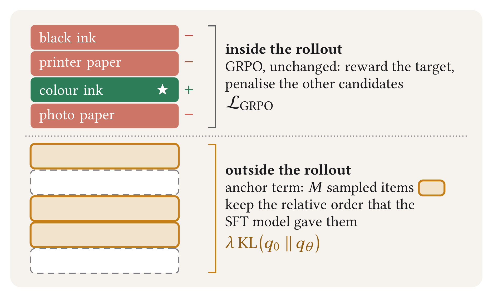
Figure 5 中虚线把同一条训练提示分成上下两路。上面沿用 GRPO，颜色和正负号都沿用当前采样组；彩色墨盒仍是该条训练记录应抬高的目标。下面从当前组覆盖不到的目录里另取一批邻居，描边框表示被选中的候选，虚线框表示当前步没有进入锚集合的候选。策略与冻结的 SFT 都按同一历史、同一编号分别打分，然后仅在选中的集合内部归一化。下路的监督来自同一历史下教师给出的相对评分，既不要求锚候选是日志目标，也不需要判断它是否真的会被点击。每步重抽可逐步覆盖不同邻居；在一个提示上被组内压低的物品，还可能在另一条提示的组外集合上被教师约束。两条路汇合到同一个模型，组外正则对组内输出仍可能有间接影响。训练完成后只保留更新后的策略服务推理，冻结教师和额外采样属于训练阶段。上路的候选由当前策略决定，下路用它们的前缀定位邻近物品，两个采样集合由同一轮模型输出连接。即便黑色墨盒从当前组里退出，若被另一条历史的锚集抽中，其与同一子集其他物品的评分差仍会进入损失。采用这一约束时，教师给较高分的候选相对降低会拉大前向散度。教师与策略每次都在本轮新抽的相同小集合上重归一化，集合的变化为不同物品建立跨训练步的约束。正则的强弱同时受抽样位置和教师分数分布影响。
符号解释：$\mathcal A(x)$ 为与 rollout 不重合的锚集，$m=0$ 是冻结教师，$m=\theta$ 是当前策略，$q_m$ 是该模型在相同子集上重归一化的分布。采样数量 $M$ 为十六，一半来自与某个组内物品共享前两级码的邻居，另一半来自共享第一级码的邻居。按前缀取样将算力集中到容易错排的中段。作者测到，与前十六共享首码的物品占 Office 和 Industrial 目录的百分之十二与十一，却覆盖了原排十七到五百的目标中的百分之四十四与五十七。
符号解释：$\lambda$ 在各实验为零点一，前向 KL 以教师在子集内的概率作为权重。它在两者分布一致时为零，约束的是所采物品彼此的分数差，统一给锚集各项加同一常数不改变这项损失。起始时策略等于教师，锚损失及其一阶梯度均为零。推进后它给每条提示提供一个局部约束，包括缺少命中优势的多数提示。锚定只直接约束被采样子集内的相对分数，物品仍可能被集合外的高分竞争项挤过交付线，前缀采样覆盖率因此也是复现中的重要变量。
3. 实验结果
3.1 数据、检查点和比较口径
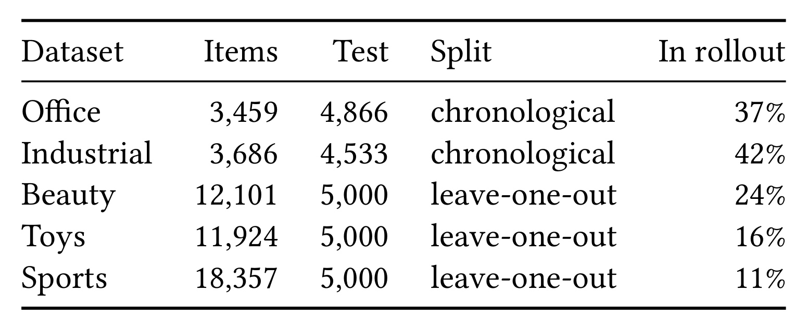
Table 2 的 Items 是可选目录规模，Test 是评价提示数，Split 给出留出规则。Office 的目录为三千四百五十九件，测试四千八百六十六条；Industrial 为三千六百八十六件和四千五百三十三条。这两组沿用 MiniOneRec 的二零一八年 Amazon 数据与原始语义编号，按时间做八比一比一划分。Beauty、Toys、Sports 使用二零一四年 Amazon 的五核子集，按用户最后一次互动留出，每组抽五千个用户做评估，目录约一万二到一万八千件。最右列是训练启动时组内出现日志目标的提示比例，按行分别是百分之三十七、四十二、二十四、十六和十一，分母是该数据集的训练提示。这一列不能当作测试集的 Hit@16，也不能当作候选池损失率。它直接决定默认奖励下有多少提示提供非零的策略优势，随训练过程可能变化。更大目录的几个数据集观测到更少的组内命中，但数据时间、切分、基础模型表现和语义编号构造同时变化，单凭这五行无法估计目录扩大本身对训练命中率的因果作用。相同的五百条在 Office 中覆盖约七分之一目录，在 Sports 只覆盖约百分之三，跨域读绝对数时要保留这一差别。
骨干为全量微调的 Qwen2.5-1.5B-Instruct。每个数据集上的后训练臂从同一 SFT 检查点开始，训练一轮约一千七百步，学习率十万分之一，每步三十二条提示，梯度裁剪为零点三。约七成提示从语义编号历史预测下一件商品，其余是输入含标题的两种辅助任务。三个新增数据集使用与 Office 训练序列量相当的子集，并复用 MiniOneRec 的超参。随机种子改变提示顺序、rollout 和锚集合抽样，主比较取三个 RL 种子的平均。显著性按同测试提示配对，用提示上的自举百分之九十五区间是否跨零判定。三个种子的带宽与这个区间分别反映运行差异和样本差异。束搜索核验复现了 MiniOneRec 评估脚本约百分之九十八的前十结果，这是协议对照的相符程度，不是模型前十命中率。主 baseline 是起始 SFT、默认 GRPO 与同设定 GRPO 加锚；另做 DPO 负例来源、优势符号与其他后训练设定对照。
3.2 深度拐点和逐目标名次迁移
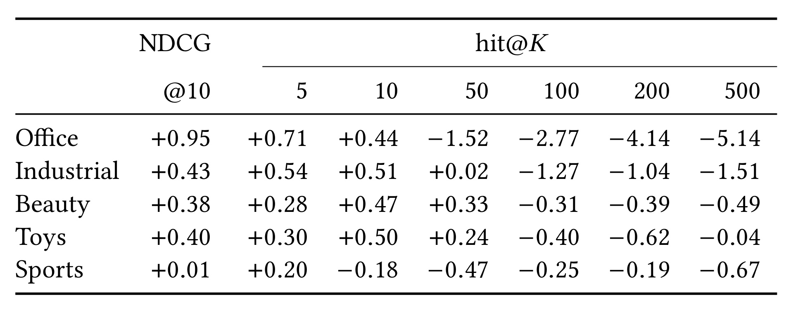
Table 3 给出一轮训练后三个种子的变化均值，第一列是前十折扣累计增益，其余各列是该深度的目标命中，单位均为百分点。Office 在 NDCG@10 增加零点九五的同时，Hit@5 和 Hit@10 分别增加零点七一和零点四四。到 Hit@50 已转为下降一点五二，到 Hit@200 下降四点一四，Hit@500 下降五点一四。Industrial 的 Hit@50 几乎持平，后面的百位与五百位分别下降一点二七和一点五一。Beauty 与 Toys 在五十位还能小幅改善，但从一百位起均比各自 SFT 低。Sports 到第五位仍略有改善，第十位已经掉零点一八，故不能写成五个数据集的所有头部指标都上升。Toys 的五百位净变化仅负零点零四，表内均值也没有给每格显著标识。五组同向支持长列表存在掉点风险，损失量级和转折深度仍随数据而变。Office 从五十位起各随机种子显著，Industrial 的一百与五百位也各随机种子显著。这一证据强于把所有负均值一概当作显著。表中差值与主表的绝对值分别舍入，末位相差零点零一仍属同一比较。
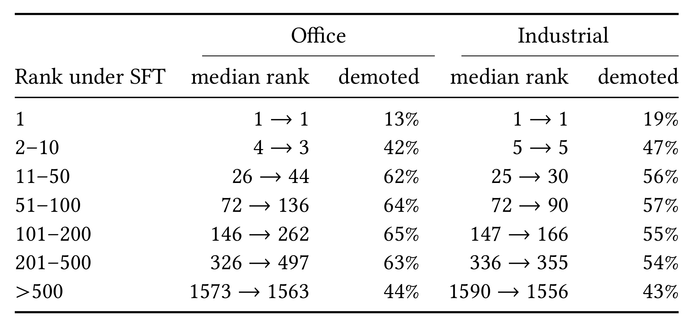
Table 4 左右是 Office 和 Industrial，每行按 SFT 给日志目标的名次固定样本，再比较两次中位名次及后训练后名次变差的提示比例。Office 原第一位的中位仍是第一，但百分之十三降位。原第二到第十位的中位由第四升至第三，降位占百分之四十二。中间几桶的走势反向，原十一到五十位的中位从二十六降到四十四，约百分之六十二降位，原五十一到一百位从七十二降到一百三十六，超过一半的目标落到一百以后。原二百零一到五百的中位由三百二十六滑到四百九十七，靠近五百的交付门槛。Industrial 中段也有过半降位，但幅度通常较小。原本五百以外的中位略向前，仍可能远离交付线。表中计量的是同一目标的名次，降位发生在名次扩大时，原五百内降位者也未必就退出前五百。用中位名次或降位比例无法直接算出净命中变化，需要逐提示看是否跨门槛。Office 的全目录物品分布熵从六点零降到三点一自然单位，单调改变温度只能改变分数差，无法单独解释这些跨越和反转。
若从 SFT 已覆盖的目标出发，默认 GRPO 在五个数据集分别漏掉其中约百分之十四至二十二。这个条件比例的分母是原先已进入前五百的目标。它与全体提示上的净百分点可以并存，因为也有原先未命中后来进入长列表的目标。使用束宽等于截断深度的受限解码时，Office 与 Industrial 的 Hit@200 分别下降二点五九和一点九六个百分点，Hit@500 分别下降三点零六和一点八三个百分点。使用束宽五十且只读前十的协议时，Hit@10 反而分别增加零点三九和零点四六。前缀搜索会改变绝对覆盖和退化大小，但在这两个数据集上，长列表掉点不依赖全目录评分这一读数方式。对真实库中的千万级物品，文章没有测同样的精确遍历时延。
3.3 负优势、负例来源和高风险目标
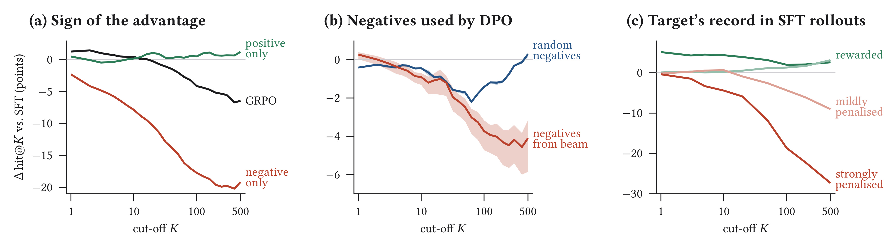
Figure 4 三幅都以 Office 相对 SFT 的 Hit 百分点为纵向量，横向按截断深度比较，但纵轴刻度不同。左幅是同步参考的单次运行：只留正优势，Office 的 Hit@500 增一点二三，两个数据集的榜首增益都不再相对 SFT 显著。只留负优势，两个数据集的 Hit@500 下跌约十九至二十一点，明显重于完整运行。中幅换成 DPO，因此去掉了 GRPO 的组优势标准化和命中门控。负例来自模型自己的 SFT 束时，Office 的 Hit@500 下降约四点一，随机目录负例则约增零点三，代价主要留在中间深度；中幅的阴影是三个种子的范围。右幅用训练前即可计算的目标记录作分组，最负一组在 Office 掉二十七点四，次负组掉九点零；正记录提示分组总体约增三点。右幅也是同步参考单次运行，和后面默认配置图的强负桶不能逐值混用。符号替换提供更新方向的受控证据，DPO 对照表明深池损失可出现在另一类偏好训练中，分桶则揭示损失落在哪些提示上。分组使用的是物品级记录，热门度与被采样频率也可能关联，它不能直接量出任意两条相似历史之间传递了多少梯度。没有出现在训练 rollout 的少数目标相对上移，也符合一批低受罚物品因竞争对手下滑而提升相对名次的解释。
在 Office 和 Industrial，SFT 模拟组产生的负记录覆盖了约百分之四十五与三十四的测试提示目标。文中称仅约百分之一点七的测试目标从未出现在这些组候选中。负优势能在作者试验的更新规则下解释净损失，但只留正优势也牺牲了原有头部改善。对业务上的同类诊断，等量替换模型挖出的难负例为随机负例可以用来核验负例身份的作用。头部下降、深池恢复、中位排名变化需要分别计算，单看总损失或奖励曲线很难分辨是哪种作用。
3.4 锚定对深度和受损分组的恢复
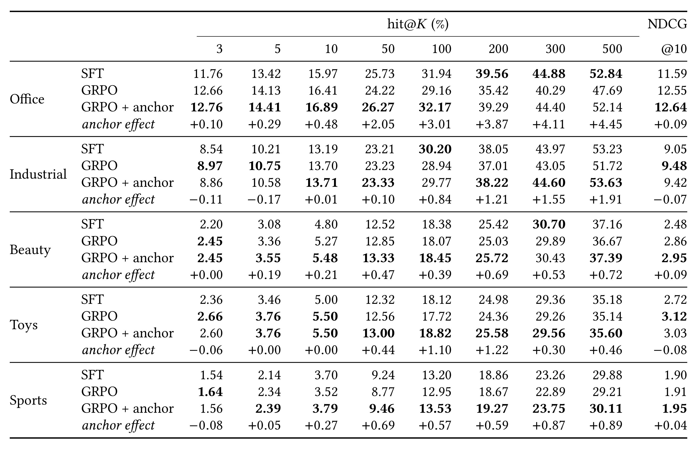
Table 5 每个数据集的前三行是绝对百分比，第四行 anchor effect 是同一提示上加锚相对 GRPO 的百分点差。Office 的 NDCG@10 依次为 11.59%、12.55%、12.64%，Hit@50 依次为 25.73%、24.22%、26.27%，Hit@500 则为 52.84%、47.69%、52.14%。锚在五百位追回约四点四五个百分点，距 SFT 仍约零点七。Industrial 的五百位从未经锚定的 51.72% 升到 53.63%，超过起始 53.23%。Beauty、Toys、Sports 的五百位加锚后分别为 37.39%、35.60%、30.11%，也略高于各自起始值 37.16%、35.18%、29.88%。五组在五十位的最高值均属于锚定策略，这个结论不能外推到每一列，例如 Industrial 的一百位加锚仍低于 SFT。Toys 原本在五百位只小幅掉点，锚恢复的净百分点较小，但其两百位相对 GRPO 增一点二二点。判读时要对照实际候选配额取列，避免用深度五百的优势代表所有中间深度。三次实验里锚定与 GRPO 的 NDCG@10、Hit@5 和 Hit@10 无显著差异，说明在目前样本和方案下没有检出头部代价。个别格子锚定略低也正常，不能把“未检出差异”读成逐种子等效证明。Office 的五十至五百位提升在每个种子上显著，Industrial 的五百位同样如此。总体主张是恢复大部分中深段覆盖，同时维持现有头部表现。以 Office 的前五十为例，加锚超过 SFT 约半点，而五百位仍低于起点，说明收益具有深度结构。同样的候选资源预算下，如果下游只能处理前五十条，恢复到五百内但仍在五十以外的目标对下游不可见。表中正的锚定差给出两臂候选命中的净差，两臂候选仍可能来自不同目标。如果想判断锚是否复原了原始模型的交付，需要继续对齐目标身份。对于五百条恢复的结论，需要结合下一图和原已覆盖目标的留存率判断。
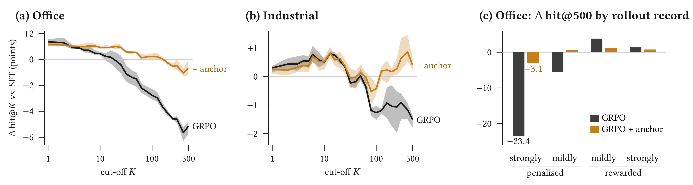
Figure 6 的左中两幅分别对 Office 和 Industrial 画随深度变化的命中差，纵轴都以 SFT 为零基线，橙线加锚、深色线为 GRPO，阴影为三个种子的范围。Office 橙线在深处仍会落到零下，但下滑远小于 GRPO。Industrial 加锚曲线在靠近一百处仍有低谷，之后回升，和主表二百位以后超过起点的读法一致。右幅横轴换成目标 rollout 记录的分组，纵轴固定为 Hit@500 的百分点差。默认配置单次种子中，Office 强负桶从跌二十三点四到跌三点一，差值约二十点三；Industrial 文中给出对应的跌十点九到跌二点三。右侧较正的桶仍可看到一部分收益，说明平均回升尤其来自此前受损的目标。原 SFT 在五百条内的目标，未加锚时有百分之十四至二十二退出，加锚后约为百分之五至八。论文另外用测试策略分数最高的十六件代理实际 rollout 观察相对分数漂移。Office 的组外锚集 KL 从一点五三降到零点一九自然单位，组内也从一点一五降到零点六三。两类支持不同的陈述：柱图和流失率观察目标交付，KL 观察被采样集合的分数结构。组内 KL 同时缩小也印证两路梯度经过共享参数，并没有形成两个互不干扰的模型。
3.5 其他后训练配置与训练开销边界
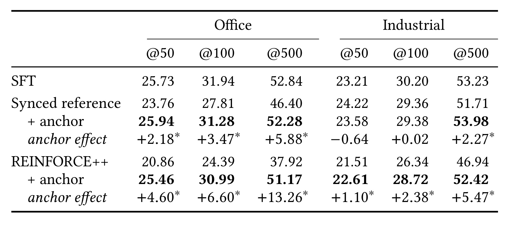
Table 6 的列分别为 Office 和 Industrial 的五十、一百、五百位。每个配置块先列基础 RL 绝对值，再给加锚行和成对差，星号表示在该种子的测试提示上显著。同步参考将参考策略随训练向当前策略移动，Office 无锚在五百位为 46.40%，加锚后是 52.28%，提升五点八八。Industrial 从 51.71% 到 53.98%，提升二点二七，但五十位差值负零点六四且没有星。REINFORCE++ 用带基线的批级优势归一化，Office 五百位由 37.92% 恢复至 51.17%，Industrial 由 46.94% 到 52.42%，分别增加十三点二六和五点四七，仍低于各自 SFT 的 52.84% 和 53.23%。文章另外报告这两组的 NDCG@10 显著上升，而表本身只显示三个深度的 Hit。不同更新配置都能在各自基础上改善大截断点，为约束有一定可迁移性提供证据。单次种子的星号仍无法说明换初始化或批次顺序后的方差，同步参考的两轮训练继续掉点也不能证明加锚到同样轮数仍稳定。提高五百位覆盖与修复所有深度之间仍有差距。同步参考在 Industrial 上从五十位到五百位的差方向不同，也说明对某个部署截断的改善应就该列检验。训练需多一个冻结教师在锚集上的打分，还需当前策略为这批物品计算可导分数。论文没有直接报告训练吞吐、显存、额外算时或线上延迟测量。推理公式未加教师或重排序路径，实际束搜索耗时和候选交付吞吐仍需要在服务端独立测量。
4. 总结
4.1 我的判断
最实质的结果是把同一个生成策略在两个交付深度上的表现拆开，并锁定了原本可用但后来掉出池的日志目标。Office 上少数头部目标提前便能改进前十折扣指标，而原处于中段的较多目标跨过五百位，显示 SFT 与 GRPO 实际交付了不同的候选资源。负优势消融、负例来源替换和训练前分组分别改变更新方向、竞争对象和观察单位，三者合在一起使“困难备选在跨用户更新中被压低”成为可复核的解释。锚定有价值在于它保留了训练中调整头部竞争关系的能力，同时用冻结教师给当前 rollout 未触及的近邻提供局部约束。对 Office 的严谨结论是追回约八成多的五百位损失，其余四组的该档位略超起点。真实用户最终看到的内容还取决于各通道补偿、过滤和下游排序。
4.2 局限与影响
- 五组数据来自 Amazon 评论，均按单条下一物品标签和闭目录测量。未观测的合理选择和曝光偏差无法从离线命中中拆出。对新鲜内容和多兴趣场景，目标的确切定义会影响结论。
- 五百在不同目录中占比不同，本文的历史长度、语义码长度和可索引目录规模与生产并无统一对应。越深的实际交付还可能叠加重复、前缀剪枝或业务过滤，绝对指标不可从论文直接移植。
- 主要实验复用一个骨干与固定训练轮次。新增三个数据集未单独调参，部分符号消融与替代配置只有一次运行；统计显著性对应这些运行下的提示级差异，跨随机性的幅度仍需要估计。
- 锚信号复制教师在抽中近邻上的偏好。教师本身把真实目标排错、前缀聚类偏弱或近邻很少时，可保护的结构有限。它也可能维持一部分 SFT 原有偏差，对原来长期在池外的目标没有直接奖励。
- 全文连带引用产业案例，但作者的证据是离线结果。没有同窗线上实验、训练收益成本曲线及服务端吞吐。恢复被某一路覆盖的目标后，下游未必会选它，也无法从 Hit 推出时长、购买或总体多样性的变化。
4.3 复现与后续跟进
第一步应保留同起点 SFT 和无需改动训练配置的默认 GRPO，在固定测试提示上同时导出精确或基于可用束宽的目标名次，记录前十、中段和实际交付截断，逐提示统计原命中后丢失、新增命中和净变化。还应把验证用的全目录排序与服务实跑结果并排读，便于区分评分反转、前缀搜索遗漏及下游过滤各自造成的目标流失。
第二步在同一模型骨干复现组外锚，并检查锚集合覆盖到多少中段目标。随机目录采样、只取首码、前两级码和混合采样可以在相同数量和算力预算下比较，同时观察真实困难负例和可能的未标注正例。加入更多种子并报告组内与组外的相对评分差、训练增量时间及显存，才能判断改善来自抽样位置、正则本身还是额外训练信号。
第三步有条件时给同批回放请求接上实际候选合并和排序，区分单通道恢复、下游可见的新增目标以及最终展示变化。还能按老用户与稀疏历史、候选热度和新鲜度做对照，核验本文用历史相似性解释的交叉压低，在开放目录和通道互补条件下有多大。若目标包含多个可核验的后续选择，应另外给出多正例口径，以检验单标签假负例的解释能跨多远。